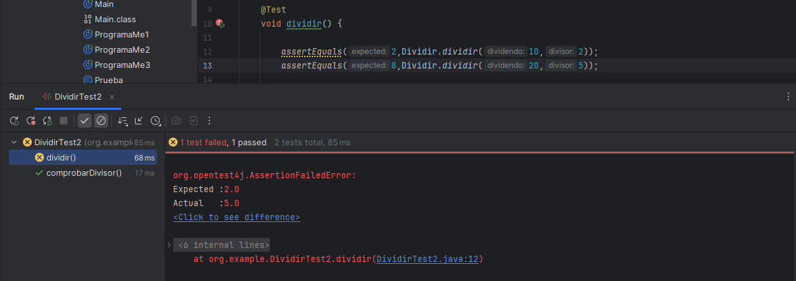
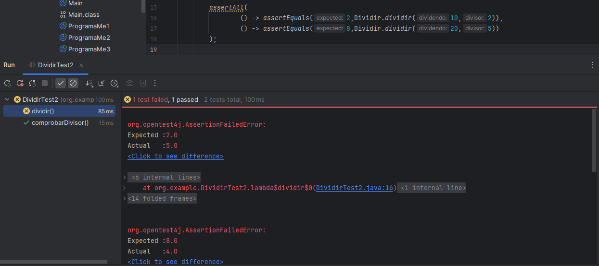

Entre los métodos que tenemos disponibles, utilizaremos los siguientes:
- assertEquals / assertNotEquals: permiten comprobar que dos valores sean iguales o diferentes, respectivamente. Se usan para validar resultados concretos, como el valor de un atributo, el retorno de un método o una operación aritmética.
- assertTrue / assertFalse: evalúan que una condición booleana sea verdadera o falsa. Son útiles cuando queremos verificar expresiones lógicas, estados, o el resultado de métodos que retornan boolean.
- assertArrayEquals: comprueba que dos vectores (arrays) sean iguales en tamaño y contenido.
Método assertAll()
class DividirTest2 {
@Test
void dividir() {
//sin All
assertEquals(5,Dividir.dividir(10,2));
assertEquals(4,Dividir.dividir(20,5));
//con All
assertAll(
() -> assertEquals(5,Dividir.dividir(10,2)),
() -> assertEquals(4,Dividir.dividir(20,5))
);
}
@Test
void comprobarDivisor() {
assertFalse(Dividir.comprobarDivisor(0));
}
}En JUnit, la diferencia entre usar varios assert normales y usar assertAll es cómo se manejan los errores que van saliendo durante la ejecución de las pruebas.
- En caso de tener varios asserts seguidos, si el primero falla, la prueba se detiene ahí mismo. Los siguientes asserts no se ejecutarán, por lo que sólo veremos el primer error. Por lo tanto, no sabremos si sólo falló la primera validación o si había más errores.

- Con assertAll, JUnit ejecuta todos los asserts dentro del bloque, incluso si uno falla. Al final nos mostrará todos los errores juntos.
